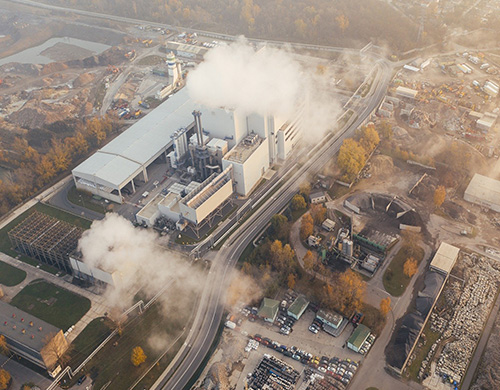

home > 제품소개 > 에너지
에너지
- 열병합발전Cogeneration Plant
- 열병합발전소, 열전용보일러, 자원회수시설 등 1개소 이상의 집중된 에너지 생산시설에서 생산된 에너지(열 또는 열과 전기) 를 주거, 상업지역 또는 산업단지 내의 다수 사용자에세 일괄적으로 공급하는 사업입니다.
사업 정보
열병합발전 Cogeneration Plant
- 용도
- • 여수산단 입주사에 필요한 전기, 증기, 정제수를 공급합니다.
- 특징
- • 배열을 효과적으로 이용해 전력과 열에너지를 동시에 생산하여 종합에너지 이용효율을 향상시킵니다. (에너지효율 75~90%, 20~30% 에너지 절약)
- • 분산형 전원으로 하절기/동절기 전력 Peak-Cut용으로 이용 가능하며 안정된 전력수급에 기여합니다.
- • 복수 사업장 운용 및 예비설비운영을 통해 1년 365일 연속 안정적인 유틸리티를 공급합니다.
- • 원격지 전력송전에 의한 설비비 및 송전손실 비용을 줄입니다.
- • 연료 사용량 감소 및 공해방지시설의 집중관리에 따라 환경개선에 기여합니다. (환경오염물질 30% 이상 저감)
- 특장점
- • Gas Boiler 2기 설치로 시작해 1993년 민간 집단에너지 사업자 자격을 취득하고, 1995년 민간업체 전기판매권을 취득하였습니다. 이후 연료 다변화(TDF, Bio-SRF 등), 추기배압 및 추기복수식 열병합발전설비와 수전설비 도입 등으로 고객의 안정적 생산공정을 약속하는 것은 물론 국가 에너지 절약 시책에도 적극 기여하고 있습니다. 국내 CFBC Boiler 운용 선두업체로서 물류 계열사인 금호티앤엘을 통해 유연탄을 안정적으로 수급하는 동시에, 유연탄 외 다양한 고형연료 연구개발에 앞장서고 있습니다.
| 순수 | 여과수 | 음용수 | 증기 | 전기 |
|---|---|---|---|---|
| 1,840 | 1,600 | 28 | 1,710 | 300 |
제품 분류
전기
- 전기
- 자체 발전 설비 및 한국전력 수전설비를 보유하여 22.9kV의 전력을 여수산업단지공단내 수전사에 무정전으로 공급하고 있습니다. 이원화된 전력공급 설비의 안정적인 운영으로 고객사의 전력 손실 방지 및 전력 PEAK 예방에 기여하고 있습니다.
| 종류 | 전압 | 주파수 | 비고 |
|---|---|---|---|
| 전기 | 22.9 kV | 표준주파수 60Hz | 무정전 공급 |
| 구분 | 종류 | 시설현황 | 시설용량 | 비고 |
|---|---|---|---|---|
| 전기 | 발전 | 35.9 MW x 1기 | 300 MW | 한국전력공사, 여천T/L, 화치T/L |
| 119.13 MW x 1기 | ||||
| 144.97 MW x 1기 | ||||
| 수전 | 70/90 MVA x 2기 | 185 MVA | ||
| 45 MVA x 1기 |
증기

- 증기
- 열과 전기를 동시에 생산하는 이원화된 종합에너지시스템을 운영하고 있으며, 여기서 생산된 제품인 스팀은 여수산단 입주 고객의 수급 조건에 따라 다양한 압력과 온도로 공급되고 있으며, 보유 예비설비운영 및 설비의 이중화 등으로 1년 365일 안정적이며, 연속적인 공급이 가능하여 수급사에 유리한 제품입니다.
| 종류 | 압력(kgf/cm2) | 온도(℃) | 자체 관리기준 |
|---|---|---|---|
| 주증기 | 약 100 | 약 480 | Conductivity < 5㎲/cm / pH: 8.5 ~ 9.2 / SiO2 < 0.02ppm |
| 약 128 | 약 538 | ||
| 고압증기 | 약 45 | 약 330 | |
| 중압증기 | 약 25 | 약 250 | |
| 저압증기 | 약 10 | 약 200 |
| 구분 | 종류 | 시설현황 | 시설용량 | 비고 |
|---|---|---|---|---|
| 증기 | Gas 보일러 | 60 T/hr x 2기 | 1,710 T/hr | Tail-Gas |
| CFBC보일러 | 290 T/hr x 1기 | 유연탄 전용 | ||
| 250 T/hr x 2기 | TDF 혼소 | |||
| 400 T/hr x 2기 | TDF, Biomass 혼소 |
용수
- 용수
- 보유중인 대용량의 용수여과장치 및 중력식 여과지, 이온교환식 순수생산설비를 통해 생산된 제품인 여과수, 순수, 음용수를 고객사에 공급하고 있습니다. 자체 실험분석실 운영과 전문업체의 주기적인 분석관리 등 철저한 품질관리를 실시하고 있습니다.
| 종류 | 구분 | 자체 관리기준 |
|---|---|---|
| 용수 | 순수 | pH 6.5 ~ 7.5 / 전도도 < 1㎲/cm / SiO2 < 0.02ppm / Fe < 0.01ppm |
| 여과수 | Turb < 2 Deg | |
| 음용수 | 환경부 수질기준 준용 |
| 구분 | 종류 | 시설현황 | 시설용량 | 비고 |
|---|---|---|---|---|
| 용수 | 순수 | 160 T/hr x 4기 | 1,840 T/hr | - |
| 300 T/hr X 4기 | ||||
| 여과수 | 300 T/hr x 1기 | 1,600 T/hr | ||
| 37.5 T/hr x 8기 | ||||
| 50 T/hr x 4기 | ||||
| 100 T/hr x 8기 | ||||
| 음용수 | 10 T/hr x 1기 | 28 T/hr | ||
| 18 T/hr x 1기 |